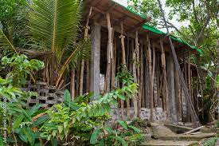
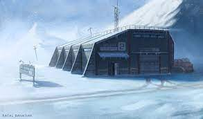

The Gaia Facility is our main base of operations for the excavation and study of these earth hearts located in the sierra nevada mountain range. This does not mean its our only facility as we have many more around the globe such as our Anciano Excavation Facility in the Amazon Rainforest, and our Eldrich Winter Facility in the heart of russia.

The Anciano facility is our excavation facility, where most of our earth heart excavation occurs. The amazon not only houses the largest earth heart population but is also our most heavily guarded facility as many people have tried and failed to get their hands on these precious materials.
The Eldrich Winter Facility is our biggest by far with over 200 square acres of land. Of course a majority of the facility is underground just like every other. We are building this facility in order to relocate there as when the earth hearts taken from their original spot they must be cooled down in order to maintain their freshness.
